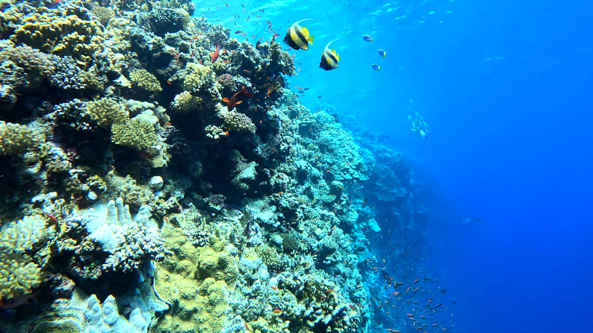
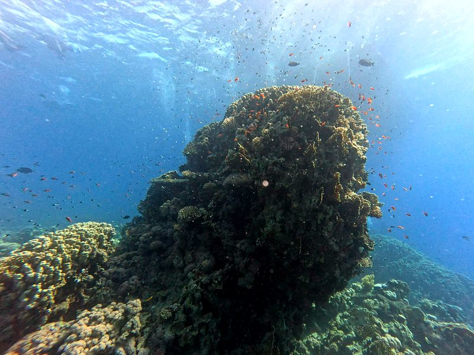

Full Professional Pathway
Qualified to train divers from their very first steps all the way through to PADI Divemaster and specialty certifications.
0 m · Surface · Sharm El Sheikh
PADI Scuba Instructor. Courses from beginner to PADI Divemaster, 10+ years in the Red Sea — patient, family-focused and safety-first. In English, Spanish or Arabic.
Start your descent5 m · Meet your instructor
With 10 years of experience guiding certified divers in the Red Sea and 6 years as a PADI Scuba Instructor, I turn dive dreams into unforgettable underwater adventures. I offer a full range of PADI training—from beginner discovery dives all the way up to PADI Divemaster, along with a wide variety of PADI Specialty courses.
I specialize in family-friendly diving, helping kids, teens, and adults build real confidence in the water. Known for my high energy, endless patience, and strict, conservative approach to safety, I create a calm and supportive environment whether you're taking your very first breath underwater or starting your journey toward becoming a dive professional.

12 m · Why dive with Mootaz
Qualified to train divers from their very first steps all the way through to PADI Divemaster and specialty certifications.
10+ years guiding certified divers in Sharm El Sheikh means I know these reefs inside and out—from the wall drops of Ras Mohammed to the currents of Tiran.
Patient, encouraging, and highly recommended by parents for teaching children and families at their own comfortable pace.
A conservative, safety-conscious approach to dive planning so you and your family can dive with total peace of mind.
Passionate about sharing the beauty of the underwater world, with the patience needed to build skill and confidence in every diver.
Lessons and dive briefings in English, Spanish, or Arabic, so you can learn comfortably in the language that suits you best.
18 m · Training & courses

Your very first breath underwater, in a calm and supportive environment.

A wide variety of PADI Specialty courses to build real skill and confidence.

Start your journey toward becoming a dive professional.
Course availability and specialty options confirmed directly — DM on Instagram to plan your training.
24 m · The wall





30 m · Ready to dive?
DM to book your dives! Reach out on Instagram and let's plan your next Red Sea adventure.
DM to Book Your Dive📍 Based in Sharm El Sheikh, Red Sea 🇪🇬